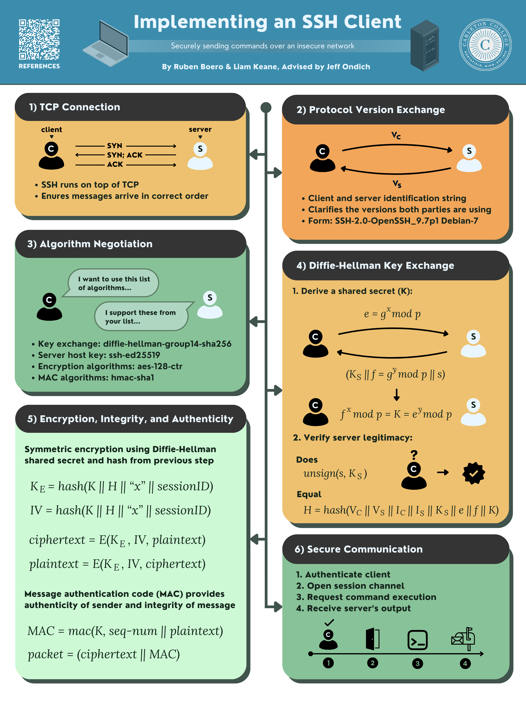

Back to main site
Implementing an SSH Client
SSH allows secure, remote connection to another machine — primarily to gain access to a remote terminal. The exchange runs on top of TCP and has five main phases: protocol version exchange, key exchange initialization, Diffie-Hellman key exchange, and the connection protocol. The full project brief by Jeff Ondich is available here.
Contributors
- Liam Keane
- Ruben Boero
- Advisor: Jeff Ondich
Code
Documentation
Demo
Poster
